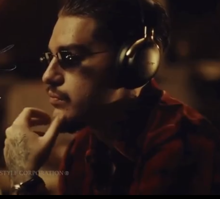

Noah Olivier Smith also known as Yeat is a rapper from Irvine, California. He originally blew up when a drunk man on Instagram live was singing his lyrics while walking around a street in the dead of night. This is the man that put him on the radar.
Regardless of how I found out about Yeat I really enjoy his music even though I do not relate to any of it. It just sounds great to me. His beats and his vibe are what make him my all time favorite rapper. His story is rather inspiring because he did not come out of nowhere. He had a gradual come up in the underground scene. After every album release he would jump up in listeners, but that drunk man singing blew him up making him appear in people's edits and even appearing in social media posts with spinning skulls.
